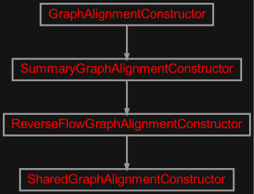
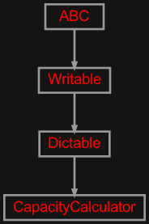
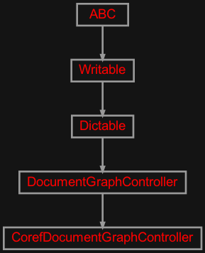
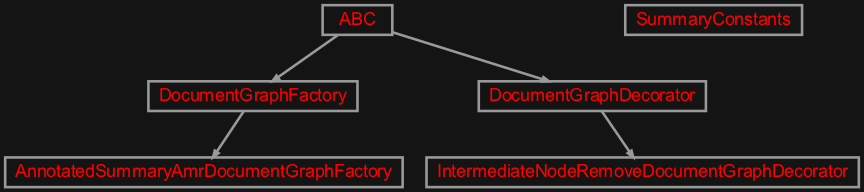

zensols.calamr.summary namespace#
Submodules#
zensols.calamr.summary.alignconst#

Graph alignment constructors for summary graphs.
- class zensols.calamr.summary.alignconst.ReverseFlowGraphAlignmentConstructor(doc_graph=None, source_flow=10000000000.0, capacity_calculator=None, reverse_alignments=False)[source]#
Bases:
SummaryGraphAlignmentConstructorA constructor that:
* reverses the edges of the graph
connects the source flow node to the leaf AMR nodes of the source and summary components
connects the sink flow node to the sentence nodes of the source component
- __init__(doc_graph=None, source_flow=10000000000.0, capacity_calculator=None, reverse_alignments=False)#
Bases:
ReverseFlowGraphAlignmentConstructorCreates graph alignment
ComponentAlignmentGraphEdgeinstances from another graph so they can share capacity updates.The original constructor that has the graph to query and copy alignments (see class docs).
- class zensols.calamr.summary.alignconst.SummaryGraphAlignmentConstructor(doc_graph=None, source_flow=10000000000.0, capacity_calculator=None)[source]#
Bases:
GraphAlignmentConstructorA graph alignment constructor for summary graphs.
- __init__(doc_graph=None, source_flow=10000000000.0, capacity_calculator=None)#
-
capacity_calculator:
CapacityCalculator= None# Calculates and the component alignment capacities.
- property component_alignment_capacities: Tuple[Tuple[int, int, float]]#
The component alignment edges (alignment) and capacities edges as tuples of:
``(<source vertex index>, <summary index>, <capacity>)``
- find_flow_diffs(diff_value=0, compare=<function SummaryGraphAlignmentConstructor.<lambda>>)[source]#
Find edges having a flow to capacity delta.
- property source: DocumentGraphComponent#
The document and AMR nodes that make up the source content of the document.
- property summary: DocumentGraphComponent#
The document and AMR nodes that make up the summary content of the document.
zensols.calamr.summary.capacity#

Connection similarity computation.
- class zensols.calamr.summary.capacity.CapacityCalculator(embedding_populator, include_tokens, clear_align_node_iteration, hyp)[source]#
Bases:
DictableCalculates and the component alignment capacities.
- __init__(embedding_populator, include_tokens, clear_align_node_iteration, hyp)#
-
clear_align_node_iteration:
bool# _Context.clear) the intermediate data structures after each iteration of the node alignment algorithm. Cursory results on a small sample show flow and alignments only slightly change when :obj:`_Context.neigh_sim is cleared.
This is because the concept embeddings are used in network neighborhood calculations and a convergance algorithm (like CRFs) are implemented at this time.
Setting to
Falseshows a speeds it up by ~75% on a small random sample.- Type:
Whether to clear (
- Type:
meth
-
embedding_populator:
EmbeddingPopulator# Adds embeddings to frameset instances and used for debugging in this class.
-
hyp:
HyperparamModel# The calculator’s hyperparameters.
Hyperparameters:
:param similarity_dampen_exp: the exponent that dampens the cosine similarity for all nodes :type similarity_dampen_exp: dict :param concept_embedding_role_weights: the weights for concept node's roles (i.e. arg0 with neighbor node) :type concept_embedding_role_weights: dict :param concept_embedding_weights: the weights for concept node's weighted average across tokens and role sets :type concept_embedding_weights: dict :param neighbor_direction: indicate how to find neighbors (from the point of the reverse/maxflow graph with the root on the bottom), which is one of descendant (only children and descendents), ancestor (only parents and ancestors), or all (all neighbors) :type neighbor_direction: str; one of: descendant, ancestor, all :param neighbor_embedding_weights: weights used to scale each neighbor from the the current node and immediate neighbor to the furthest neighbor; if there is only one entry, the singleton value is multiplied by the respective nodes embeddings :type neighbor_embedding_weights: list :param neighbor_skew: neighborhood sidmoid skew settings with y/x translation, and compression (how much to compress or "squeeze" the function to provide a faster transition) with cosine similarity as the input :type neighbor_skew: dict :param sentence_dampen: the slope for the linear dampening of nodes under a sentence by sentence cosine similarity; the higher the value the lower the sentence similarity, which leads to lower concept and attribute node similarities, must be in the interval [0, 1] :type sentence_dampen: float
zensols.calamr.summary.coref#

Adds coreferences to the graph.
- class zensols.calamr.summary.coref.CorefDocumentGraphController(name, constructor)[source]#
Bases:
DocumentGraphControllerCreates graph alignment
ComponentAlignmentGraphEdgeinstances based on coreferent concept nodes.- __init__(name, constructor)#
-
constructor:
GraphAlignmentConstructor# The constructor used to get the source and sink nodes.
zensols.calamr.summary.factory#

Classes that organize document in content in to a hierarchy.
- class zensols.calamr.summary.factory.AnnotatedSummaryAmrDocumentGraphFactory(config_factory, graph_decorators, doc_graph_section_name, graph_attrib_context)[source]#
Bases:
DocumentGraphFactoryCreates document graphs from
AnnotatedAmrDocumentinstances.- __init__(config_factory, graph_decorators, doc_graph_section_name, graph_attrib_context)#
- class zensols.calamr.summary.factory.IntermediateNodeRemoveDocumentGraphDecorator[source]#
Bases:
DocumentGraphDecoratorA decorator that short cuts the
section,headerto make the top levelheadernode thebody-subthat has the sentences.- __init__()#
- decorate(component)[source]#
Creates the graph from a
DocumentNoderoot node.- Parameters:
component (
DocumentGraphComponent) – the graph to populate from the decorateing process